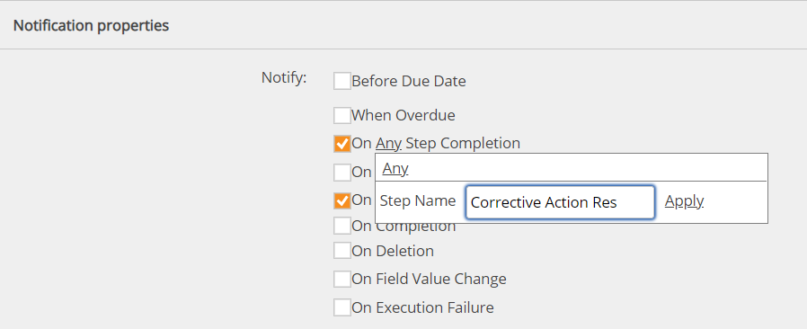
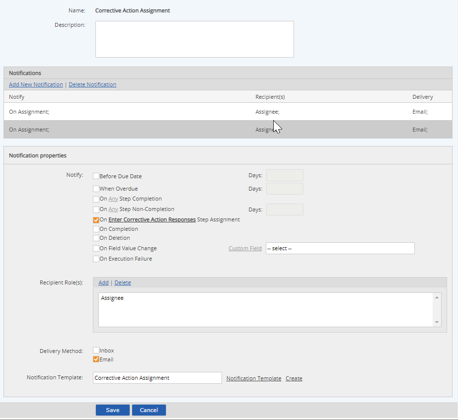

New Workflow Policies can be created from the Setup page. After a policy is created, it can then be associated with one or more workflows.
To create a new notification policy:
Select the notification schedule.
The following scheduling options are available:
Before Due Date X days before due date (specify number) and workflow status not closed
When Overdue X days after due date. Specify number, (0 for immediately when overdue).
On Any Step Completion As soon as any step in a workflow type is completed.
On [Workflow Type/Step] Step Completion As soon as a specific step in a selected workflow type is completed.
On Any Step Non-Completion X days after assignment, if any step in a workflow is not complete
On [Workflow Type/Step] Step Non-Completion X days after assignment, if the specific step in the selected workflow type is not complete.
On Any Step Assignment Whenever any step in a workflow is assigned.
On [Workflow Type/Step] Step Assignment Whenever a specific step in the selected workflow type is assigned.
On Completion Whenever the workflow is completed (on End Workflow).
On Deletion Whenever workflow instance is deleted.
On Field Value Change Whenever value of selected field changes (choose field).
On Execution Failure Whenever any workflow execution fails
The step notifications can be applied to any step in a workflow, or to a specific step in a specific workflow.
To apply the notification policy to a specific step in a workflow, click Any, then enter the name of the workflow step.

When a notification policy is associated with a specific step in a specific workflow, the association is made with the current version of the workflow type. If a new version of the workflow type is created, the policy must be edited to re-select the workflow type and step in order to continue to be valid.
Select the Recipient Role(s) who will receive the notification. Click Add and choose the Role(s) from the selection window.
The Roles list shows all Roles defined for all workflow types in the system. The Role must be used in the workflow type to which the policy will be applied. The built-in roles Assignee, Previous Assignee and Creator can be used for any workflow type.
If you want a notification to go only to the person who is specifically assigned to a step, use the generic Assignee role. If you use a workflow role that is not generic, and the role is associated with a group that has multiple members, the notification will go to all role members, regardless of whether they have been specifically assigned to the workflow. (The same logic applies to using the other generic roles.)
Select a Notification Template from the pop-up window, or click Create to create a message template for this notification.
The notification template defines the format for the message to be sent. See Notification Templates.
After completing the first notification schedule, you can add another by clicking Add New Notification.
After setting up all the notifications you want, click Save, then Confirm to save the policy.

After creating the policy, you must then associate it with the workflow type(s) where you want to use it.